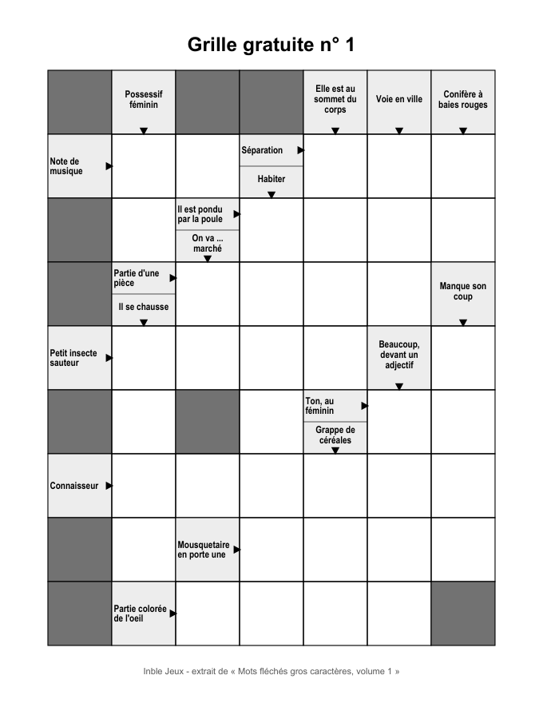

Mots fléchés en gros caractères : 2 grilles à imprimer
Deux grilles prêtes à imprimer, avec les solutions en dernière page. Les cases mesurent 2,5 cm et les définitions sont écrites assez grand pour être lues sans loupe. Pas d’inscription, pas de publicité.
Télécharger le PDF (3 pages)
Télécharger les 2 grilles (PDF)Format 21,6 × 27,9 cm (Letter). Imprimez en « taille réelle » ou « ajuster à la page » sur du papier A4 : la grille reste lisible.

Autre grille gratuite : les années 60
Une grille de mots fléchés sur la nostalgie des années 1960, à imprimer, avec sa solution : mots fléchés années 60 à imprimer, et d’autres sur les années 70 et les années 80.
Un générateur gratuit : tes propres grilles
Choisis la taille de la grille, clique sur « Générer », puis imprime la grille en PDF. La version gratuite fait une grille à la fois, avec un filigrane. Ouvrir le générateur de mots fléchés.
Comment jouer
- Chaque case grise claire contient une définition.
- La flèche indique où écrire la réponse : vers la droite ou vers le bas.
- Une lettre par case, en majuscules et sans accent (É s’écrit E, Ç s’écrit C).
- Les mots se croisent : une lettre trouvée dans un sens aide dans l’autre.
- Les cases foncées restent vides.
Envie de plus de grilles ?
Ces deux grilles sont extraites du cahier « Mots fléchés gros caractères, volume 1 » (100 grilles, solutions à la fin), publié sous le nom Inble Jeux. Le lien vers le livre sera ajouté ici dès que sa page Amazon sera en ligne.